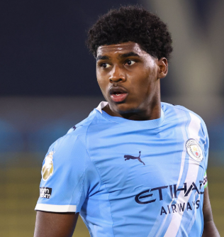
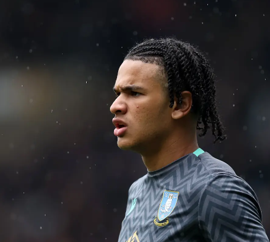

Sheffield Wednesday Close in on Loan Deal for Manchester City Midfielder Jaden Heskey

Sheffield Wednesday are closing in on securing Jaden Heskey on loan from Manchester City for the remainder of the 2025–26 season. The 20‑year‑old midfielder, who progressed through City’s academy ranks, has been a standout performer for their under‑21 side and is poised to bring fresh energy to the Owls’ midfield.
Heskey, the son of former England striker Emile Heskey, made his senior debut under Pep Guardiola in last September’s Carabao Cup, and captains City’s Premier League 2 side. He also contributed with assists in the EFL Trophy, underlining his growing leadership attributes.
Despite the club’s ongoing financial restrictions and points deductions, the Owls have received special permission to bring in two “free” loan signings. Wednesday have already struck a deal in principle with Manchester City to bring Heskey in before the closing of the January transfer window.
Midfield reinforcement remains a priority, especially with senior figures Nathaniel Chalobah sidelined and Barry Bannan leading the engine room alone. Heskey’s arrival is expected to ease the burden on those shoulders and add competition and dynamism to Henrik Pedersen’s squad.
A club statement will follow once the loan is officially confirmed. In the meantime, we look forward to integrating Jaden into the squad and boosting our midfield strength as we continue to fight for Championship survival.
Pierce Charles Faces Spell on Sidelines Following Shoulder Injury

Sheffield Wednesday can confirm that goalkeeper Pierce Charles is set for a significant period out of action after sustaining a shoulder injury during the FA Cup third-round tie against Brentford. The early prognosis suggests the Northern Ireland international could be sidelined for up to two months.
Charles was forced off in the 60th minute of Saturday’s 2-0 defeat at the Gtech Community Stadium, which brought an end to the Owls’ FA Cup campaign. The injury marks a frustrating setback for the 20-year-old, who had only recently returned to fitness in mid-December following a similar issue earlier in the season.
Since joining Wednesday from Manchester City’s youth ranks in 2021, Charles has progressed through the club’s development pathway and established himself as first-choice goalkeeper under Henrik Pedersen this term. Highly regarded by the Owls hierarchy, Charles attracted interest from Rangers and West Ham United in the summer, with the club rejecting approaches to retain his services.
After making nine starts since his return, Charles now faces another spell on the sidelines, leaving Wednesday with limited options between the posts. Teenager Logan Stretch, who replaced Charles against Brentford to make his senior debut, is currently the only available goalkeeper in the squad. Ethan Horvath, who joined on loan from Cardiff City in the summer, has since returned to his parent club following the conclusion of his deal.
The club will assess the situation in the coming days and explore potential options to strengthen the goalkeeping department during the January window. While Charles’ absence is a blow, it may reduce the likelihood of further transfer interest in the short term.
The club confirmed it will provide further updates on Pierce’s recovery in due course.